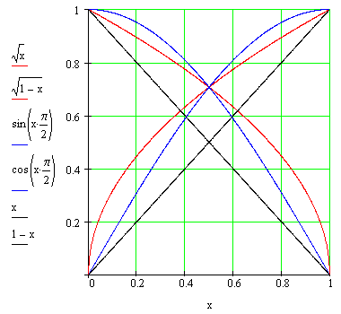
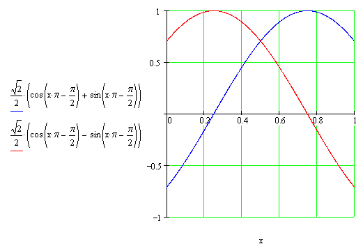
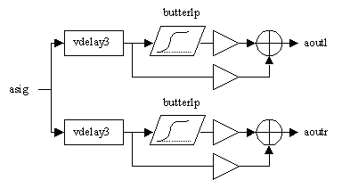

Beginners
Features
Departments
Panorama
Hans Mikelson
Stereo
The first album I bought was Rick Wakeman's "Journey to the Center of the Earth." When you listen to this album with head phones there are cool synthesizer sounds that go zipping from one side of your head to the other. Ever since I have been fascinated by the use of panning. When I started making my own music with a four track tape deck I would create the final mix with both hands on the pan knobs sweeping the sound from left to right. With Csound you have many options for panning. You can easily create moving or positioned sounds.
My First Panner
When I first started panning in Csound I multiplied the right and left channels by related variables ipanl and ipanr according to the following:
kpanl linseg 0, idur, 1 ; Generate a line going from 0 to 1
kpanr = 1 - kpanl ; The right side goes from 1 to 0
outs kpanl*asig, kpanr*asig ; Multiply by the pan value before output
In this instrument the left side fades in as the right side fades out.
There's a hole in the middle
When the sound is panned to the center the sound seems quieter than when it is panned to either the left or right side creating a "hole" in the middle. There are a couple of ways to make the sound seem more even when moving from left to right and fix the "hole in the middle".
One easy way to fix this is to take the square root of both sides:
kpan linseg 0, idur, 1 ; Straight line from zero to one kpanl = sqrt(kpan) ; Take the square root for the left side kpanr = sqrt(1-kpan) ; Use square root of 1-kpan for the right side
This method works well for most cases.
Another method to make the sound seem more uniform during panning is to use a portion of a sine wave to scale the sound as it is swept from left to right.
kpan linseg 0, idur, 1 kpan2 = kpan*3.14159265*.5 kpanl = sin(kpan2) kpanr = cos(kpan2)
The difference between these three panning strategies can be seen in the following graph:

Figure 1 Graph of three different panning strategies.
This curve shows that both square root and sine panning give a boost to the sound when panned center compared to linear panning. In practice sine panning seems to be more popular.
Advanced panning
Michael Gogins suggested another panning method in a post to the Csound mailing list. This type of panning seems to surround you a little more than the other pans.

This type of panning seems to create an almost dizzying effect when listened to with headphones.
The final section of this article goes somewhat beyond the beginner level. All of the pans presented so far have some point where all of the sound is coming from one speaker. This can be a bit disconcerting when headphones are used because in a natural environment a sound is rarely received by a single ear. A sound positioned on the right or left of the head will reach the nearer ear first and about .7 milliseconds later reach the other ear. People use these cues to determine the location of a sound. A person's head and ears also act somewhat as a low pass filter for sound. The final pan I present borrows some of the concepts from three dimensional sound and spatial audio. A simplified diagram of the system is shown.

The sound is first delayed from between .05 to .7 milliseconds depending on the position of the pan. The cutoff frequency of the lowpass filter is swept as the sound pans from left to right. The gain is adjusted so that the sound crossfades between the filtered sound and the delayed sound. When the signal is panned to one side the output signal presented for the near ear is not filtered and only delayed by .05 milliseconds. At the same time the signal for the far ear is completely the filtered signal and is delayed by .7 milliseconds.
kpan linseg ipani, idur, ipanf ; Pan from left to right over note duration
kangle = kpan * 3.14159265359 * .5 ; Compute pan*pi/2
kpanl = sin(kangle) ; Left pan value
kpanr = cos(kangle) ; Right pan value
kpl = kpanl*.5+.5 ; Generate a value between .5 and 1
kpr = kpanr*.5+.5 ; Generate a value between .5 and 1
adell vdelay3 aflt*kdclki, kpanr*.7+.05, 2 ; Delay left side .05 to .7 msec
adelr vdelay3 aflt*kdclki, kpanl*.7+.05, 2 ; Delay right side .05 to .7 msec
afltl butterlp adell, 4000+kpanl*10000 ; Generate a low pass filtered signal
afltr butterlp adelr, 4000+kpanr*10000 ; Same for the right side
aoutl = adell*kpan+afltl*(1-kpan) ; Crossfade between delayed and filtered signal
aoutr = adelr*(1-kpan)+afltr*kpan ; Same for the right side
outs aoutl*iamp*kpl*kdclko, aoutr*iamp*kpr*kdclko ; Declick and output
This method works pretty well for panning, creating a solid moving image. One disadvantage of this method is that it is somewhat computationally intensive. Another problem is that the signal may sound a bit "muddy" due to mixing of the filtered and the delayed signal when the sound is panned to the center.
Conclusions
The examples presented in this section have ranged from the simplest panning strategy to a very complex method bordering on three dimensional audio. Panning can be used to add depth and motion to your sounds. Panning is also good at providing more space for instruments whose timbres are complex and tend to "fight" each other.
Links
A good introduction to dimensional sound can be found at the following site: